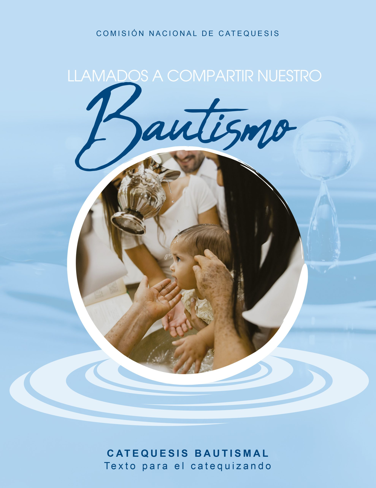
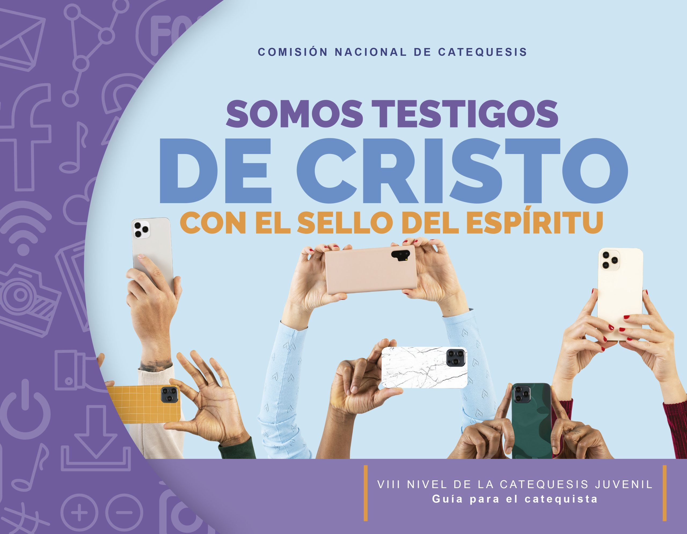

Jesus dice: Dejen que los niños vengan a mí, y no se lo impidan, porque el reino de los cielos pertenece a los que son como ellos.Mateo 19:14

¿Que es la catequesis?
La catequesis es un proceso de educación y acompañamiento en la fe católica. Su objetivo es enseñar la doctrina cristiana para iniciar a niños, jóvenes y adultos en la vida de la Iglesia y prepararlos para recibir los sacramentos (como el Bautismo, la Primera Comunión o la Confirmación).
Niveles y Textosde la Catequesis
| Nivel | Texto | Costo |
|---|---|---|
| Bautismal |  |
¢3500 |
| I Nivel |  |
¢3500 |
| II Nivel |  |
¢3500 |
| III Nivel |  |
¢3500 |
| Confirma |  |
¢3500 |
| Los textos los puedes comprar en la oficina Parroquial | ||
La catequesis y sus requisitos
- Bautismal:
- Catequesis para los padres y padrinos con niños entre los 0 a los 9 años. Requisito de los padrinos la Confirma
- I Nivel
- Catequesis para niños de 6 y 7 años. Requisito Constancia de Bautizo
- II Nivel
- Catequesis para niños de 7 y 8 años. Requisito Concluir I Nivel
- III Nivel
- Catequesis para niños de 8 y 9 años. Requisito Concluir II Nivel y haber hecho el sacramento de la reconciliación:
- Confirma
- Catequesis para jóvenes de 14 y 15 años. Requisitos Constancia bautismal, haber concluido III nivel, y el sacramento de la Comunión.